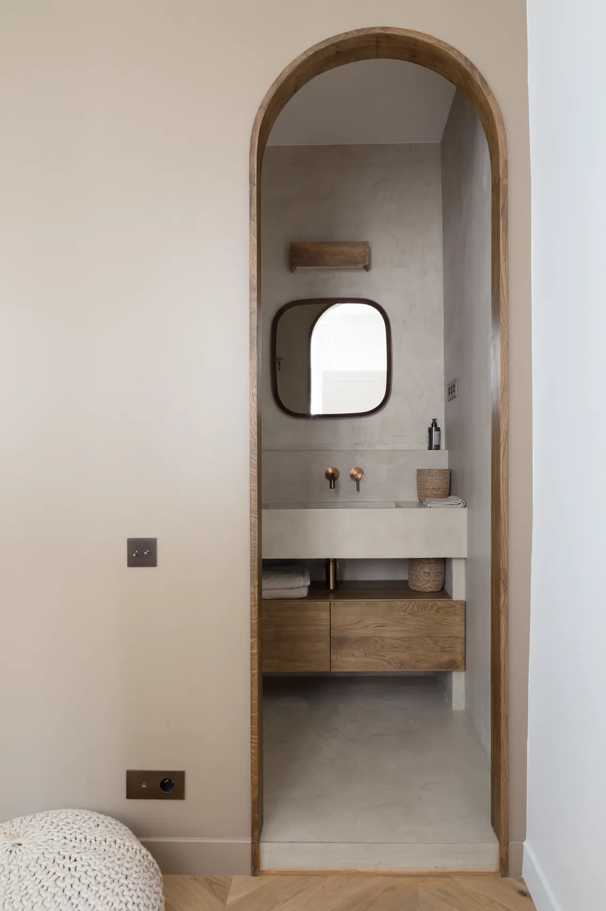
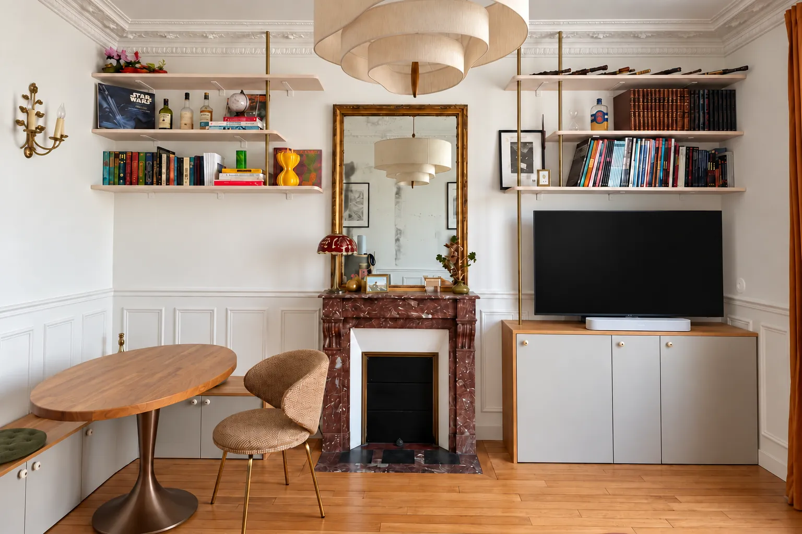

The right address, shaped around you.
I’m Margaux Stouls, an interior architect and designer in Paris. Finding the right apartment, revealing its potential, giving it character: I am with you at every step, until the day you walk in with your suitcases.

Recent apartments


Two ways to work with me
Option 1
From the search to the keys
For buyers who have not found their apartment yet.
- Apartment search
- Assessing the apartment’s potential
- Design and technical drawings
- Materials, furniture and decoration
- Final quote
- Site supervision
- Furnishing and handover
Option 2
Full renovation of an apartment you own
For owners who already have the keys.
- Study of the apartment and brief
- Design and technical drawings
- Materials, furniture and decoration
- Final quote
- Site supervision
- Furnishing and handover

Whatever the apartment is for
A primary residence
You live in Paris, or are moving here, and want the apartment redrawn around your daily life.
A pied-à-terre
Your own front door in Paris for a few months a year, with the bed made when you land.
How a pied-à-terre project worksA rental investment
An apartment where a new layout adds a bedroom or a real kitchen, built and furnished for the leases Paris allows.
How a rental project worksA resale
An apartment bought to be renovated and sold, where the design is judged on the value it adds.
From first call to keys back
- Week 1
A call about what you want
Budget, use, neighborhoods, how much work you are willing to take on. You leave with a realistic picture of what that budget buys.
- Until the right one turns up
Search and visits
I visit the shortlist and send video, my opinion of each apartment and of the building’s condition, and a first renovation estimate.
- 2 to 3 months
Offer and purchase
You buy in your own name through a notaire. I draw the plans and collect quotes during the wait between the preliminary contract and the final deed.
- In parallel with the purchase
Technical drawings and final quote
You approve and sign the technical drawings. The final quote is drawn up from them, and the building’s approval is requested where it is needed.
- Depends on the scope
The renovation
Visits to the job site, decisions put to you with pictures and prices, payments made once I have checked the work.
- Last 2 to 3 weeks
Furnishing and handover
Everything installed and photographed. I hand the keys to you, or to the property manager you chose.
Why a designer and not an agent
A buyer’s agent is paid when you buy. Their work ends at the notaire’s office, which is where the hard part of a Paris apartment begins: old wiring, a kitchen in the wrong room, a building that votes on what you may change.
I look at an apartment as a future job site before you own it. On the visit I give you my opinion on whether the wall you want gone is holding up the floor above, where a second bathroom could drain, and roughly what the whole project will cost. You make your offer with the full price in mind, purchase plus renovation.
Americans were the largest group of foreign non-resident buyers in Paris in 2025, with 220 purchases. Their median purchase was €864,000 for 65 m² (700 sq ft), according to the Notaires du Grand Paris.

What protects you when you are not there
Your deposit sits with the notaire
The deposit you pay at the preliminary contract is held by the notaire, a public legal officer, until the sale closes. You have 10 days to withdraw, counted from the day after the signed contract is notified to you.
You own the contracts
You buy in your own name and sign with each contractor yourself. Their quotes and invoices are addressed to you, and you pay them directly.
The contractors are insured by law
In France every contractor must carry 10-year liability insurance covering serious defects after the work is accepted, as Service-Public explains. I collect each certificate before work starts.
You pay for work done
Payments follow the stages of the work. You make each one after I have checked the work against the drawings and sent you the photos.
One person between you and the contractors
I am the buffer. Questions, delays and corrections go through me, and I follow up until each point is settled.
Questions buyers ask first
Do I have to come to Paris?
Not for the search or the renovation. I visit apartments for you and send video, my opinion of each one and what the renovation would involve. During the renovation I send written reports, photographs and videos, and we meet by video call. Most buyers come once to see the apartment before they commit, and once for the handover.
Can you work on an apartment I already own?
Yes. It is one of the studio’s two ways of working. If you already have the keys, the project starts with a study of the apartment, then the design and the technical drawings.
Do you work in English?
Yes. Calls, plans and reports are in English. The contractors work and write their quotes in French: I am the go-between, and I translate the quotes when needed.
What does it cost?
Each stage is quoted in writing before it starts: search, technical drawings, site supervision, furnishing. Contractor quotes are passed on to you in full.
Do you only work in Paris?
No. Most of my projects are in Paris, and I also work beyond it: the portfolio includes a country house in Burgundy and a house on Sifnos, in Greece.